fastmath.interpolation
1d, 2d interpolation functions.
See more:
Note: Smile interpolators doesn’t check ranges.
Input data
You provide data as sequence or double array.
1d interpolation
You provide two sequences:
xs- x axis coorditanes, strictly monotonic (increasing)ys- function values
See kriging-spline-interpolator
2d interpolation
This is grid based interpolation.
xs- x axis coordinates, strictly monotonic (increasing)ys- y axis coordinates, strictly monotonic (increasing)vs- sequence of sequences of values (2d array) for all possible pairs. Array is column-wise:[ [first column] [second column] ...].
Categories
- Apache Commons Math interpolators: akima-spline-interpolator bicubic-interpolator divided-difference-interpolator interpolators-list linear-interpolator loess-interpolator microsphere-2d-projection-interpolator microsphere-projection-interpolator neville-interpolator piecewise-bicubic-interpolator spline-interpolator
- 1d interpolation: akima-spline-interpolator cubic-spline-interpolator divided-difference-interpolator kriging-spline-interpolator linear-interpolator linear-smile-interpolator loess-interpolator microsphere-projection-interpolator neville-interpolator rbf-interpolator shepard-interpolator spline-interpolator
- 2d interpolation (grid based): bicubic-interpolator bicubic-smile-interpolator bilinear-interpolator cubic-2d-interpolator microsphere-2d-projection-interpolator piecewise-bicubic-interpolator
- Radial Basis Function: rbf rbf-obj rbfs-list
- Smile interpolators: bicubic-smile-interpolator bilinear-interpolator cubic-2d-interpolator cubic-spline-interpolator interpolators-list kriging-spline-interpolator linear-smile-interpolator rbf-interpolator shepard-interpolator
akima-spline-interpolator
(akima-spline-interpolator xs ys)Create cubic spline interpolator using Akima algorithm. Minimum number of points: 5
xs[n] < xs[n+1] for all n.
Source: Apache Commons Math.
Examples
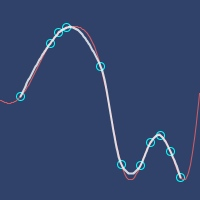Interpolation plot.
bicubic-interpolator
(bicubic-interpolator xs ys vs)Bicubic 2d.
Grid based.
Source: Apache Commons Math.
Examples
Interpolation plot.

bicubic-smile-interpolator
(bicubic-smile-interpolator xs ys vs)Bicubic 2d.
Grid based.
Source: Smile.
Examples
Interpolation plot.

bilinear-interpolator
(bilinear-interpolator xs ys vs)Bilinear 2d.
Grid based.
Source: Smile.
Examples
Interpolation plot.

cubic-2d-interpolator
(cubic-2d-interpolator xs ys vs)Cubic spline 2d.
Grid based.
Source: Smile.
Examples
Usage
(let [interpolator (cubic-2d-interpolator [2 5 9]
[2 3 10]
[[4 0 2] [-1 2 -2] [-2 0 1]])]
(m/approx (interpolator 5.0 5.0)))
;;=> 4.68
;; Test: ok.Array layout
(let [intrp (cubic-2d-interpolator [2 5] [1 6] [[-1 -2] [3 4]])]
[(intrp 2 1) (intrp 2 6) (intrp 5 1) (intrp 5 6)])
;;=> [-1.0 -2.0 3.0 4.0]Interpolation plot.

cubic-spline-interpolator
(cubic-spline-interpolator xs ys)Cubic spline interpolation.
Source: Smile.
Examples
Interpolation plot.

divided-difference-interpolator
(divided-difference-interpolator xs ys)Create Divided Difference Algorithm for interpolation.
Source: Apache Commons Math.
Examples
Interpolation plot.

interpolators-list
Map of interpolation functions
Examples
List of names
(keys interpolators-list)
;;=> (:bilinear :bicubic
;;=> :microsphere-2d :linear-smile
;;=> :rbf :neville
;;=> :cubic-spline :kriging
;;=> :piecewise-bicubic :spline
;;=> :loess :cubic-2d
;;=> :divided-diff :shepard
;;=> :linear :microsphere
;;=> :bicubic-smile :akima)kriging-spline-interpolator
(kriging-spline-interpolator xs ys)Kriging interpolation.
Source: Smile.
Examples
Usage
(let [interpolator (kriging-spline-interpolator [2 5 9 10 11]
[0.4 1.0 -1.0 -0.5
0.0])]
(m/approx (interpolator 7.0)))
;;=> -0.07
;; Test: ok.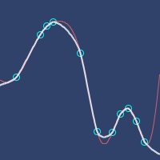Interpolation plot.
linear-interpolator
(linear-interpolator xs ys)Create Divided Difference Algorithm for inqterpolation.
Source: Apache Commons Math.
Examples
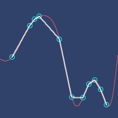Interpolation plot.
linear-smile-interpolator
(linear-smile-interpolator xs ys)Linear interpolation from Smile library.
Source: Smile.
Examples
Interpolation plot.
loess-interpolator
(loess-interpolator xs ys)(loess-interpolator xs ys bandwidth robustness-iters)(loess-interpolator xs ys bandwidth robustness-iters accuracy)Local Regression Algorithm
- bandwidth: 0.2-1.0 (optimal: 0.25-0.5, default: 0.3)
- robustness-iters: 0-4 (optimal: 0, default: 2)
- accuracy: double (default: 1e-12)
Source: Apache Commons Math.
Examples
Interpolation plot.

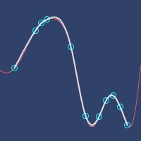Loess, bandwidth=0.2, robustness-iters=1
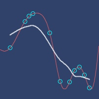Loess, bandwidth=0.7, robustness-iters=4
microsphere-2d-projection-interpolator
(microsphere-2d-projection-interpolator xs ys vs elements max-dark-friction dark-threshold background exponent shared-sphere? no-interpolation-tolerance)Microsphere projection interpolator - 2d version
Grid based.
Source: Apache Commons Math.
Examples
Interpolation plot.

microsphere-projection-interpolator
(microsphere-projection-interpolator xs ys elements max-dark-friction dark-threshold background exponent shared-sphere? no-interpolation-tolerance)Microsphere projection interpolator - 1d version
Source: Apache Commons Math.
Examples
Usage
(microsphere-projection-interpolator xs ys 8 0.9 1.0E-7 1 1.5 false 1)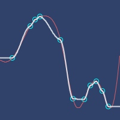Plot of above settings.
neville-interpolator
(neville-interpolator xs ys)Neville algorithm
Source: Apache Commons Math.
Examples
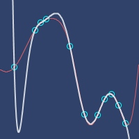Interpolation plot.
piecewise-bicubic-interpolator
(piecewise-bicubic-interpolator xs ys vs)Piecewise bicubic 2d.
Grid based.
Source: Apache Commons Math.
Examples
Interpolation plot.

rbf
multimethod
Create Radial Basis Function
Optional parameter: scaling factor.
Examples
Usage
(let [rbf-fn (rbf :multiquadratic 3.0)] (rbf-fn 0.5))
;;=> 3.0413812651491097rbf-interpolator
(rbf-interpolator xs ys rbf-fn normalize?)(rbf-interpolator xs ys rbf-fn)RBF (Radial Basis Function) interpolation.
Source: Smile
Examples
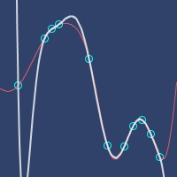With Gaussian RBF (scale=120)
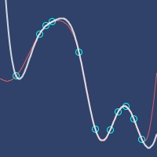With Multiquadratic RBF (scale=120)
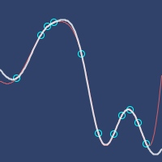With Inverse Multiquadratic RBF (scale=80)
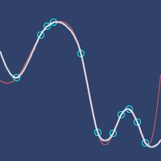With ThinPlate RBF (scale=80)
rbf-obj
(rbf-obj rbf-fn)Create RBF Smile object.
Used to pass to Smile constructors/functions.
Examples
Usage
(let [rbf-obj (rbf-obj (rbf :thinplate))] (.f rbf-obj 0.5))
;;=> -0.17328679513998632rbfs-list
Radial Basis function names
Examples
List of names
(sort rbfs-list)
;;=> (:gaussian :inverse-multiquadratic :multiquadratic :thinplate)shepard-interpolator
(shepard-interpolator xs ys)(shepard-interpolator xs ys p)Shepard interpolation.
Source: Smile.
Examples
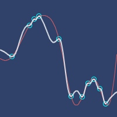Interpolation plot.
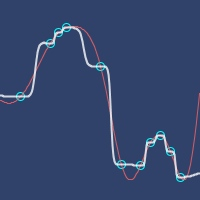Shepard, p=5
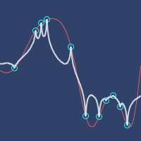Shepard, p=0.9
spline-interpolator
(spline-interpolator xs ys)Cubic spline interpolation
Source: Apache Commons Math.
Examples
Interpolation plot.